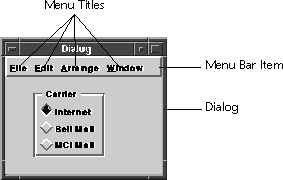

Menu Bar
The Menu Bar class implements a dialog item that lets you group menus together in a dialog. A menu bar (vmenubar) contains an ordered list of menus that are provided by your application. A menu bar displays the menu title inside the menu bar content area. Clicking or key traversing a title opens the associated menu. Although most menu manipulation is done by using the Menu class, the Menu Bar class provides functionality for locating menus in a dialog.
Figure 60. Menu bar item (Motif look-and-feel)

Menu bars are implemented as a subclass of the default dialog item class (DialogItem).
While the Menu Bar class controls the appearance and location of a menu bar in a dialog, it relies heavily on the Menu class for activities such as drawing menus when they are selected and generating events for selected menu items.
A menu can be further controlled and manipulated using the Menu class. Refer to the Menu chapter for more information.
On some look and feels, the "Help" menu is often right justified on the menu bar. You can programmatically specify whether a menu bar should draw the right most menu on the far right by using SetHasHelp. You can determine whether a menu bar has set this attribute by calling MenuHasHelp.
Menu Bars Versus Menus
A menu bar is a dialog item subclass that makes locating menus in a dialog easy. Note that menu bars are not menus. Instead, menus are assigned to a menu bar, with the menu bar controlling the relative location of the menus to each other. Creating and Using Menu Bars
Most menu bars are created with the Visual Resource Builder,functions such as Create and Copy exist which allow you to create a menu bar programmatically. You usually locate a menu bar by finding it in a dialog. For example, the following code sample returns a pointer to the menu bar with the tag of "mbMain." vmenubar *mbMain = (vmenubar *)
vdialogFindItem(dialog, vnameInternGlobalLiteral("mbMain"));
The individual menus can then be accessed by using FindMenu, which returns a menu with the given tag. For example, the following sample returns the menu with the tag of "File" (so long as the menu bar does contain a menu called "File"). vmenu *mFile = vmenubarFindMenu(mbMain,
vnameInternGlobalLiteral("File"));
If you know the location of the menu, you can retrieve a menu by using GetMenuAt, passing in the index number of the menu (which ranges from zero to the number of menus on a menu bar minus one). If you need to determine how many menus are located on a menu bar, use GetMenuCount. Menu Location
Use AppendMenu to programmatically add a menu to a menu bar. The Menu Bar class places the given menu to the right of the last menu located in the menu bar. A menu can be removed by using DeleteMenu. Macintosh Menu Bars
On the Macintosh, menu bars are automatically placed in the system menu bar (located at the top of the screen). The screen menu bar changes to reflect the menu bar assigned to the top most dialog. If you want to have the menu drawn in its dialog instead of in the system menu bar, use SetLocal. This leaves the system menu bar as it was before the dialog was brought to the front. Use IsLocal to determine whether a menu bar will be drawn in its dialog, or will be used in the system menu bar.
Table of Contents
Help Map
Need help? Contact Visix.